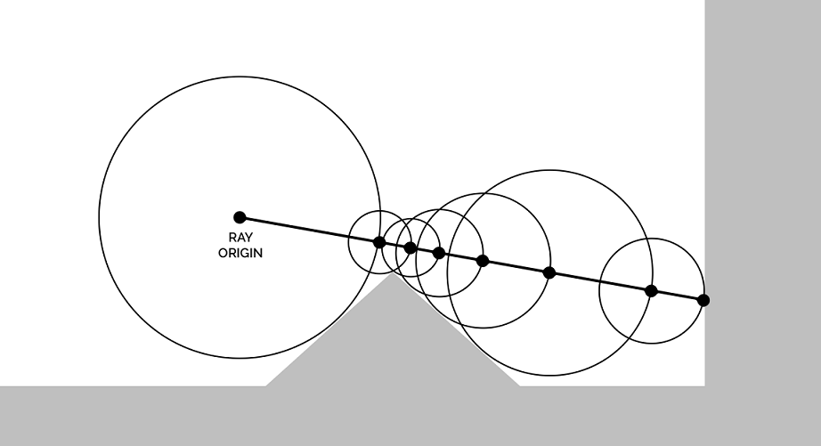

"Signed Distance Functions" heyya technique bech t'rendri des objets w des volumes Ɛla surface.
SDFs mostaƐmlin barcha f'el volumes (eg. smoke fi counter-strike) w el complex shaders (kima ShaderToy).
~~! Q̈bal ma nq̈admou f'el ħkeya hedhi lezem ykoun Ɛandek base f'el Shaders
w taƐraf chnouwa el Ray tracing, aƐmel gacha
w'arjaƐ !~~
Awel etape bech ennejmou n'rendriw el scene,
lezem nefhmou el concept mteƐ el Raymarching.
"Raymarching" houma kelmtin:
1. "ray" (fr: rayon)
2. "marching" (yemchi/yq̈addem).
Houni, el ray yq̈addem mel camera w ychouf chƐand'na f'el scene.
Ken yelq̈a objet, ylawwén el pixela f'el écran b'couleur l'objet.
"Ray tracing" y'traci ligne waħda kol marra,
par controle el "Ray marching" y'traci b'sphere kemla w ychouf el distance bin el centre mtaƐ el sphere
w aq̈rab object.
Kol marra yelq̈a object, yƐawed y'traci mel limite mtaƐ el'sphere (el distance eli lq̈aha).

Function mtaƐ el raymarching:
float raymarch(vec3 cameraPosition, vec3 cameraDirection){ // N'initializew el depth(FR: profondeur) mtaƐ el ray (houni MIN_DIST = 0) float depth = MIN_DIST; // Kol marra nq̈admou chwaya (men 0 lel max steps: MAX_MARCHING_STEPS = 20) for (int i = 0; i < MAX_MARCHING_STEPS; i++) { // Nthabtou el distance l'aq̈rab point f'el scene mteƐna float dist = sceneSDF(cameraPosition + depth * cameraDirection); // Idha ken el distance asghar m'el epsilon, (houni EPSILON = 0.001) if (dist < EPSILON) { // Fi west el surface! return depth; } // Q̈addem el depth ħasb el distance depth += dist; if (depth >= MAX_DIST) { // BƐiid yecer, zeyed, nrajƐou el distance maximale eli wselnelha (houni MAX_DIST = 100) return MAX_DIST; } } // Une fois kammelna m'el raymarching loop, n'returniew MAX_DIST return MAX_DIST;} |
Binnesba lel "sceneSDF", heya juste function elli t'representi el scene mteƐna.
El scene tnajem tkoun 1 object wela barcha objects. Kol object howa formule tmathel des distances.
Kol objet yaƐtina distance(float) binnesba l'position eli naƐaddiwhelou.
Example bech n'ajoutiew sphere lel scene:
float sceneSDF(vec3 p){ return sdSphere(p);} |
Fama ħaja essemha "SDF operators" eli heya tkhallina nzidou akthar men object weħed lel scene.
Bech nfasrouhom baƐd ama tnajem telq̈a el objects w'el operatel kol
houni.
Hedhi el Sphere function:
float sdSphere(vec3 p){ return length(p) - 1.;} |
Kobr el sphere "1.0" f'hal example.
Ken nħebbou n'akhtarou el size, nƐaddiwah comme parameter, kima haka:
float sdSphere(vec3 p, float size){ return length(p) - size;} |
Eq̈tiraħét: sdf - advanced | shaders | Home